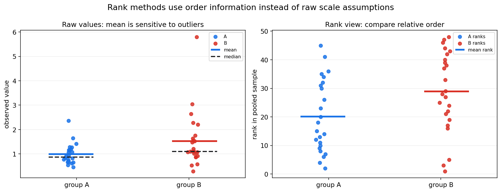
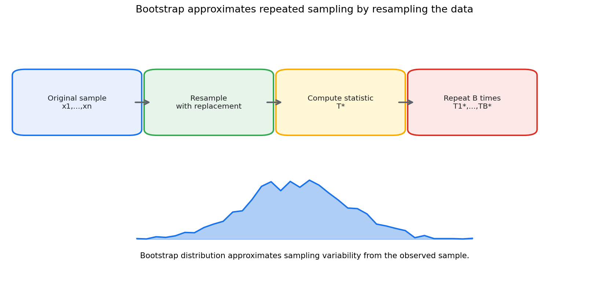
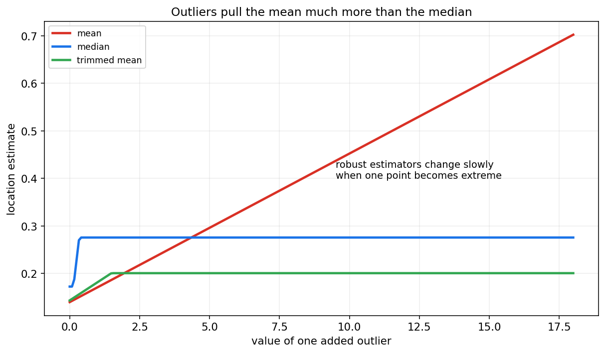
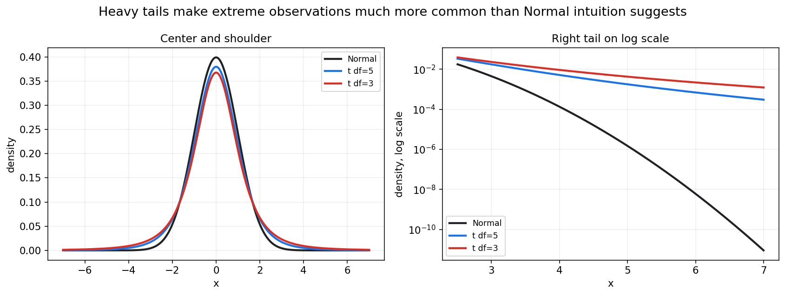

数理统计第十一章教程: 非参数统计, 重抽样与稳健方法
前面几章的很多结论依赖漂亮的模型假设:
- 样本独立同分布
- 正态总体或大样本正态近似
- 方差稳定
- 少数异常值不会强烈影响结果现实数据却经常不这么配合:
1. 分布明显偏态或厚尾.
2. 样本量不大, 正态近似不稳.
3. 数据里有异常值.
4. 只关心顺序, 不相信原始尺度.
5. 很难写出可信的参数模型.这一章介绍的非参数统计, 重抽样和稳健方法, 不是放弃统计推断, 而是在假设不够可靠时换一套更稳妥的工具.
0. 先看全章主线
第十一章的主线可以压成下面这张图:
flowchart LR
A["现实数据<br/>偏态, 厚尾, 异常值"] --> B["参数方法<br/>依赖明确分布假设"]
A --> C["非参数方法<br/>少用分布形状假设"]
C --> D["秩和符号<br/>使用顺序和方向信息"]
C --> E["KS 检验<br/>比较分布函数"]
A --> F["重抽样<br/>用样本近似重复抽样"]
F --> G["Bootstrap<br/>有放回重采样"]
F --> H["Jackknife<br/>留一法近似影响"]
F --> I["置换检验<br/>打乱标签构造零分布"]
A --> J["稳健方法<br/>降低异常值影响"]
J --> K["中位数, MAD,<br/>截尾均值"]一句话概括这一章:
非参数和稳健方法不是完全没有假设,
而是在参数模型不够可信时,
用更少的结构假设换取更稳妥的推断.
1. 为什么需要非参数和稳健方法
1.1 参数方法的优势
参数方法假设总体属于某个有限参数族.
例如:
或:
如果假设合理, 参数方法通常很高效:
- 公式清楚
- 推断精确
- 样本量需求较低
- 解释简洁
1.2 参数方法的风险
如果假设明显错了, 参数方法可能给出看似精确但实际不可靠的结论.
常见问题包括:
- 正态假设不成立
- 方差不等
- 离群点强烈影响均值和方差
- 分布厚尾导致极端值更常见
- 样本量太小, 大样本近似不稳
这时我们需要另一类方法.
1.3 非参数不等于没有假设
非参数方法并不是完全没有假设.
它只是减少对具体分布形状的依赖.
例如秩和检验不要求正态分布, 但仍然需要考虑:
- 样本是否独立
- 两组观测是否可比较
- 数据是否至少有顺序意义
- 检验目标到底是位置差异还是更广泛的分布差异
所以更准确的说法是:
非参数方法少用参数分布假设, 但不是无条件可靠.
2. 秩的思想
2.1 什么是秩
把一组观测从小到大排序, 每个观测的位置编号称为秩.
例如样本:
从小到大是:
对应秩为:
原始数值被转换成相对顺序.
2.2 为什么用秩
秩方法关心的是谁更大, 谁更小, 而不是具体差多少.
这有两个好处:
- 对极端值更不敏感
- 不需要强假设原始数值服从正态分布

图中左侧看原始数值, 均值会被极端点拉动.
右侧把数值转换成秩, 重点变成两组在合并排序中的相对位置.
2.3 信息损失
秩方法也有代价.
把原始数值变成秩以后, 数值间距信息会被丢掉.
例如:
和:
秩都是:
但原始尺度差异完全不同.
所以秩方法适合在原始尺度不可靠, 或异常值风险很高时使用.
3. 符号检验
3.1 问题形式
符号检验常用于配对数据或中位数问题.
例如同一批用户在改版前后各有一个指标:
构造差值:
如果只关心方向, 就记录:
3.2 原假设
检验中位数差异是否为 0:
如果 $H_0$ 成立, 正差和负差大致一样可能.
忽略 $D_i=0$ 的样本后, 正号个数:
在 $H_0$ 下近似服从:
3.3 优点和限制
优点:
- 非常稳健
- 只需要方向信息
- 对极端差值不敏感
限制:
- 丢掉差值大小
- 功效可能较低
- 只适合问题确实可以用方向表达时
4. Wilcoxon 检验初步
4.1 Wilcoxon 符号秩检验
符号检验只看方向.
Wilcoxon 符号秩检验进一步使用差值绝对值的秩.
对配对差值:
步骤大致是:
- 去掉 $D_i=0$ 的样本.
- 对 $|D_i|$ 排秩.
- 给秩加上原差值的正负号.
- 比较正秩和负秩是否平衡.
它比符号检验利用了更多信息, 但仍然比 t 检验少依赖正态假设.
4.2 Wilcoxon 秩和检验
两独立样本的秩和检验也称 Mann-Whitney U 检验.
它把两组样本合并排序, 比较两组秩和是否明显不同.
直觉是:
如果两组来自同一分布, 它们在合并排序中应该交错出现.
如果一组整体偏大, 这一组的秩和会偏大.
4.3 它检验的不是简单均值差
秩和检验常被粗略说成比较中位数, 但严格解释要小心.
如果两组分布形状相同, 只存在位置平移, 它可以理解为比较位置差异.
如果两组分布形状不同, 它更像是在比较随机优势:
因此结论语言要和假设条件匹配.
5. Kolmogorov-Smirnov 检验初步
5.1 从经验分布函数出发
第七章定义过经验分布函数:
KS 检验直接比较分布函数之间的距离.
5.2 单样本 KS 检验
单样本 KS 检验比较经验分布 $F_n$ 和某个理论分布 $F_0$:
如果最大差距太大, 就拒绝样本来自 $F_0$ 的假设.
5.3 两样本 KS 检验
两样本 KS 检验比较两个经验分布:
它关心的是两个总体分布是否相同, 不只是均值或中位数.
5.4 使用注意
KS 检验对分布整体差异敏感, 但不同位置的敏感度并不完全相同.
如果重点是尾部差异, 可能需要专门的尾部检验或图形诊断.
6. Bootstrap
6.1 核心想法
Bootstrap 的核心思想是:
把手里的样本当作总体的近似, 再从样本中有放回地重采样.
给定样本:
每次有放回抽取 $n$ 个值, 得到一份 bootstrap 样本:
然后计算统计量:
重复很多次后, $T^*$ 的分布用来近似 $T$ 的抽样分布.

6.2 Bootstrap 能估什么
Bootstrap 常用于估计:
- 标准误
- 偏差
- 置信区间
- 复杂统计量的抽样分布
尤其当统计量的理论标准误难推导时, Bootstrap 很有用.
6.3 百分位区间
假设我们重复 $B$ 次得到:
一个简单的 $95%$ bootstrap 百分位区间是:
其中 $q_{0.025}$ 和 $q_{0.975}$ 是 bootstrap 统计量的对应分位数.
6.4 Bootstrap 的限制
Bootstrap 不是魔法.
它依赖一个关键前提:
原始样本能代表总体.
如果样本本身严重有偏, Bootstrap 会围绕这个有偏样本重复采样, 不能自动修复偏差.
另外, 对极端尾部分位数, 强依赖数据, 小样本最大值等问题, 普通 bootstrap 可能表现不稳.
7. Jackknife 初步
7.1 留一法思想
Jackknife 每次删掉一个观测, 用剩余 $n-1$ 个样本重新计算统计量.
第 $i$ 个 jackknife 样本为:
对应统计量:
7.2 用途
Jackknife 常用于:
- 估计标准误
- 估计偏差
- 分析单个样本点对统计量的影响
如果删掉某个点后统计量变化很大, 这个点可能是高影响点.
7.3 和 Bootstrap 的差别
Bootstrap 是有放回重采样, 每次抽出同样大小的样本.
Jackknife 是系统地每次删掉一个点.
粗略比较:
- Bootstrap 更灵活, 适用统计量更广
- Jackknife 更便宜, 更适合影响分析
- 对非光滑统计量, 如中位数, Jackknife 可能不如 Bootstrap 稳
8. 置换检验
8.1 核心想法
置换检验用于检验两组差异时非常直观.
假设原假设是:
如果 $H_0$ 成立, 组标签 A 和 B 是可以交换的.
于是我们可以:
- 合并两组数据.
- 随机打乱组标签.
- 每次重新计算组间差异统计量.
- 用这些置换统计量构造零假设分布.
- 看真实组间差异是否足够极端.
8.2 例子: 均值差
设观察到两组均值差:
置换后得到:
双侧 p 值可以近似为:
分子和分母加 1 是常见的有限样本修正, 可避免 p 值为 0.
8.3 置换检验的关键假设
置换检验依赖可交换性.
也就是说, 在原假设下, 标签打乱后数据的联合分布不变.
如果样本有时间依赖, 分层结构或配对结构, 不能随意全局打乱标签.
需要在合理的块内或配对结构内置换.
9. 稳健位置估计
9.1 均值的脆弱性
均值使用所有数值大小, 所以对极端值敏感.
例如:
均值是:
但大多数样本集中在 1 到 4 附近.
9.2 中位数
中位数是排序后中间位置的值.
它对少数极端值更稳健.
中位数的 breakdown point 可达 $50%$.
直觉是:
只要不到一半的样本被污染, 中位数仍不会被无限拉走.
9.3 截尾均值
截尾均值先去掉两端一定比例的样本, 再求均值.
例如 10% 截尾均值:
- 排序.
- 去掉最小的 10% 和最大的 10%.
- 对中间部分求均值.
它在均值和中位数之间折中:
- 比均值更稳健
- 比中位数保留更多数值信息

图中随着一个异常值越来越大, 均值持续被拉动, 中位数变化很慢, 截尾均值介于二者之间.
10. 稳健尺度估计
10.1 标准差的问题
标准差使用平方偏差:
平方会放大极端值影响.
如果数据有厚尾或异常点, 标准差可能被强烈拉大.
10.2 MAD
MAD, median absolute deviation, 定义为:
在正态分布下, 常用尺度校正:
使其可与标准差大致对齐.
10.3 IQR
四分位距定义为:
它只依赖中间 50% 的数据, 对极端尾部更稳健.
常见箱线图中的异常值规则:
这只是启发式规则, 不是必须删除数据的命令.
11. 厚尾数据
11.1 什么是厚尾
厚尾分布指极端值出现概率比正态分布更高.

图中右侧用对数纵轴放大尾部差异.
t 分布在尾部明显高于正态分布, 说明极端值更常见.
11.2 为什么厚尾麻烦
厚尾会带来:
- 样本均值收敛更慢
- 样本方差波动更大
- 正态近似需要更大样本
- 极端值对模型和检验影响更强
在金融损失, 网络流量, 用户消费金额, 文件大小等场景中, 厚尾很常见.
11.3 应对思路
常见应对方式:
- 使用中位数, 分位数, 截尾均值
- 对正值数据取对数
- 使用稳健标准误
- 使用分位数回归
- 对尾部单独建模
- 报告不止均值, 同时报分位数
12. 异常值处理
12.1 异常值不是自动错误
异常值可能来自:
- 录入错误
- 传感器故障
- 埋点重复
- 真实罕见事件
- 不同子群体混在一起
不能看到异常值就直接删除.
12.2 处理前先分类
处理异常值前先问:
- 是否是数据错误?
- 是否来自目标总体?
- 是否由业务规则解释?
- 是否只影响少数统计量?
- 删除后结论是否变化?
如果是明确数据错误, 可以修正或排除并记录规则.
如果是真实极端事件, 删除它可能会扭曲目标总体.
12.3 敏感性分析
稳妥做法是报告敏感性分析:
- 包含异常值的结果
- 排除明确错误后的结果
- 使用稳健统计量后的结果
如果结论只在某一种处理方式下成立, 就要谨慎解释.
13. 参数方法, 非参数方法和稳健方法怎么选
13.1 参数方法适合什么时候
参数方法适合:
- 分布假设有理论或经验支持
- 样本量不大但模型可靠
- 需要高效估计
- 需要明确解释参数
例如正态误差线性回归在许多工程场景中是有用近似.
13.2 非参数方法适合什么时候
非参数方法适合:
- 不想强依赖正态分布
- 数据只有顺序意义
- 样本量中等, 可用秩信息
- 目标是比较分布或位置差异
例如评分等级, 偏态响应, 小样本两组比较.
13.3 重抽样适合什么时候
重抽样适合:
- 统计量标准误难推导
- 想估计复杂指标的不确定性
- 样本量足以代表总体
- 希望用模拟方式理解抽样波动
Bootstrap 常用于中位数, 分位数, AUC, 自定义业务指标的区间估计.
13.4 稳健方法适合什么时候
稳健方法适合:
- 异常值不可避免
- 分布厚尾
- 均值和标准差不稳定
- 希望结论不被少数点主导
稳健不是保守的同义词.
它是在承认数据不完美的前提下, 让结论更可追溯.
14. 本章主线总结
第十一章可以压成几句话:
- 参数方法高效, 但依赖分布假设.
- 非参数方法减少分布形状假设, 常使用秩, 符号和经验分布.
- 符号检验只用方向信息, 很稳健但功效较低.
- Wilcoxon 方法使用秩信息, 适合不想强依赖正态假设的比较.
- KS 检验直接比较经验分布函数.
- Bootstrap 用有放回重采样近似抽样分布.
- Jackknife 通过留一法估计标准误和样本影响.
- 置换检验通过打乱标签构造零假设分布.
- 中位数, MAD, IQR, 截尾均值能降低异常值影响.
- 厚尾数据需要比正态直觉更谨慎的推断.
本章最重要的提醒是:
少一点分布假设不等于没有假设,
稳健方法也必须和数据来源, 抽样机制, 研究目标一起解释.
15. 典型题型与实战清单
15.1 典型题型
- 判断是否适合参数 t 检验
- 看样本量
- 看偏态和异常值
- 看独立性和方差结构
- 选择秩检验
- 配对数据可考虑 Wilcoxon 符号秩检验
- 两独立样本可考虑秩和检验
- 写 Bootstrap 流程
- 有放回抽样
- 每次计算统计量
- 用重复统计量估标准误或区间
- 写置换检验流程
- 明确可交换性
- 打乱标签
- 构造零分布
- 计算极端比例
- 比较均值和中位数
- 说明异常值对均值影响更强
- 说明中位数更稳健但可能效率较低
- 识别厚尾风险
- 极端值频繁
- 样本方差不稳定
- 均值区间很宽或不稳定
15.2 实战清单
分析真实数据时, 可以按下面顺序检查:
- 数据是否有异常值?
- 分布是否明显偏态或厚尾?
- 目标统计量是均值, 中位数, 分位数还是比例?
- 参数假设是否有现实依据?
- 样本量是否支持大样本近似?
- 是否可用 Bootstrap 估计不确定性?
- 是否存在配对, 分层或时间结构?
- 置换检验是否满足可交换性?
- 稳健结果和普通结果是否一致?
- 异常值处理规则是否提前确定并记录?
16. 典型误区
误区 1: 以为非参数方法没有假设
非参数方法仍然需要样本独立性, 可比较性和合理抽样机制.
只是它们通常少依赖具体分布形状.
误区 2: Bootstrap 能修复样本偏差
Bootstrap 只能围绕已有样本重采样.
如果原始样本不代表目标总体, Bootstrap 不能自动变出代表性.
误区 3: 异常值一律删除
异常值可能是真实重要事件.
删除前必须说明原因, 规则和对结论的影响.
误区 4: 秩检验总是在比较中位数
秩和检验在分布形状相同且只存在位置平移时可解释为位置差异.
分布形状不同的时候, 解释要更谨慎.
误区 5: 用重抽样替代研究设计
如果数据收集过程有偏, 标签不可交换, 或样本不独立, 重抽样方法也会失效.
误区 6: 只看均值不看分布
厚尾和偏态数据中, 均值可能不足以代表典型样本.
应同时看中位数, 分位数, 尾部风险和图形诊断.
17. 和前后章节的连接点
17.1 和第七章的连接
经验分布函数和顺序统计量是非参数统计的重要基础.
第七章的抽样分布思想也贯穿 Bootstrap 和置换检验.
17.2 和第八章的连接
Bootstrap 可以为复杂估计量提供标准误和置信区间.
稳健估计则是在估计量设计上降低异常值影响.
17.3 和第九章的连接
置换检验和秩检验都是假设检验.
它们同样需要明确原假设, p 值解释和错误控制.
17.4 和第十章的连接
残差异常, 厚尾和异方差会影响回归推断.
稳健标准误, 分位数回归, Bootstrap 区间等方法都能作为补充.
17.5 和后续贝叶斯与统计学习的连接
贝叶斯模型和机器学习模型也会遇到异常值和厚尾问题.
稳健损失, 重尾噪声, 重采样评估, 都会继续使用本章思想.
18. 本章收尾
现实数据很少完全满足教科书假设.
第十一章的价值是提醒我们:
当漂亮模型不够可靠时,
仍然可以通过秩, 重抽样和稳健估计继续做有边界的推断.
下一章开始进入贝叶斯统计.
那里会换一种视角: 不只把参数看成固定未知量, 还可以用概率分布表达我们对参数的不确定性.